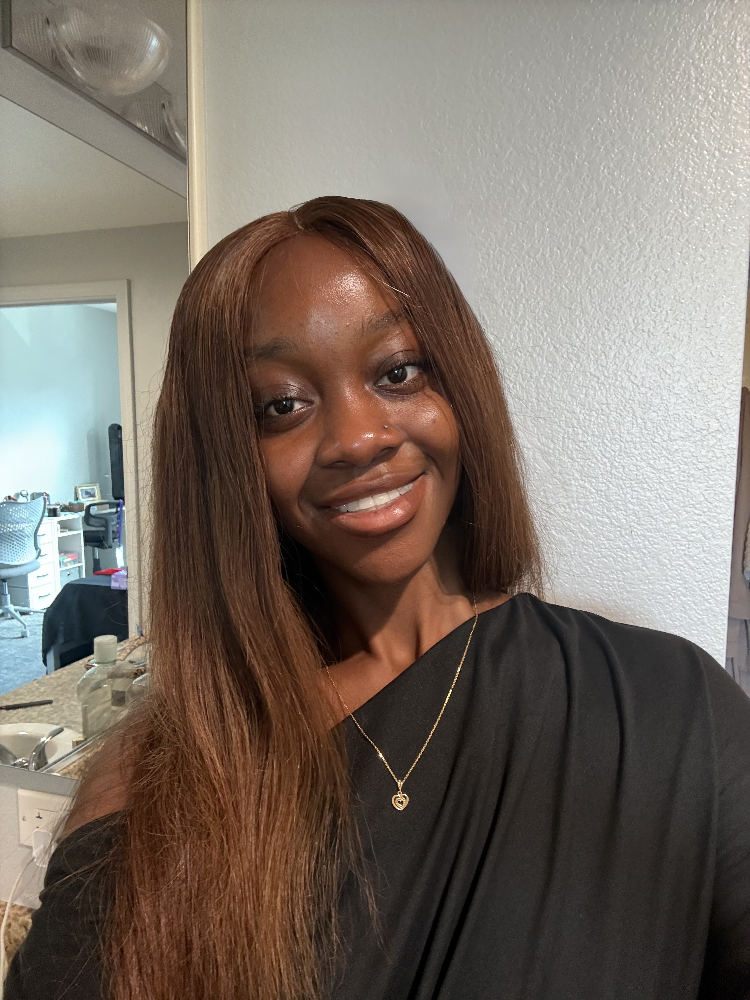

Data & Analytics
LA Business Pulse
An interactive analytics dashboard exploring trends across more than 600,000 Los Angeles business records using Python, SQL and React
Explore the dashboardStudent · Software Engineering · Business Analytics

About Me
I enjoy frontend software development and finding patterns through data hence the combination of software engineering and business analytics.
My goal is to start off my career as a front-end developer and eventually transition into product management, combining technical skills with an understanding of people's needs to create meaningful solutions.
Outside of school, I enjoy coding, playing Call of Duty, listening to music, and watching cartoons, especially King of the Hill. I love finding ways to bring my creativity and personality into the projects I build
Building a financially secure future motivates me to keep learning, improve my skills, and explore new challenges.
Through this portfolio, I hope to showcase my technical abilities, personal growth, and the projects that have shaped my journey as I work toward my career goal.
Featured Projects
Projects that reflect my technical and collaborative interests.
Data & Analytics
An interactive analytics dashboard exploring trends across more than 600,000 Los Angeles business records using Python, SQL and React
Explore the dashboardSystems Programming
A virtual memory simulator built in C that implements address translation, demand paging, and page replacement algorithms to analyze memory performance.
Explore the simulatoriOS Development & Game Design
An interactive iOS target practice game built with SwiftUI, featuring gesture-based controls, score tracking and animated gameplay.
Explore the gameDuring my internship at Inpath Technologies, I gained hands-on experience with product development and learned how business needs and user feedback influence technical decisions.
I help strengthen connections between our Girls Who Code community and organizations that can provide educational and professional opportunities.
Working in Chapman's Office of Admission has strengthened my communication, organization, and multitasking skills in a fast-paced, student-facing environment.
I help students build confidence in mathematics by breaking down challenging concepts into understandable steps.
Languages, frameworks, and tools I've worked with through coursework, projects, and professional experience.